Lean: Machine-Checked Mathematics, Software, and AI
Leonardo de Moura
Vice President and Distinguished Scientist, AWS
Chief Architect, Lean FRO
Mathematics in the Age of AI · NYU Courant · November 14, 2026
What is Lean?
A proof assistant and programming language.
Lean provides machine-checkable proofs.
Lean is implemented in Lean, and is very extensible and scalable.
Small trusted kernel. Proofs can be exported and independently checked.
358K+ unique installations: ~205K VS Code; ~153K Open VSX.

Lean is a "Game"
"You have written my favorite computer game" — Kevin Buzzard, Prof. of Mathematics, Imperial College
def odd (n : Nat) : Prop := ∃ k, n = 2 * k + 1
theorem square_of_odd_is_odd : odd n → odd (n * n) := by
intro ⟨k₁, e₁⟩
simp [e₁, odd]
exists 2 * k₁ * k₁ + 2 * k₁
lia
The "game board": you see goals and hypotheses, then apply "moves" (tactics).
Each tactic transforms the game board.
The kernel checks the final proof term.
Lean: The First 10 Years
Lean 3: The Prover Becomes Programmable
Released January 2017, with a tutorial at POPL 2017.
First Lean version with a real tactic framework.
Tactics are written in Lean itself.
"A Metaprogramming Framework for Formal Verification" — ICFP 2017.
The community implemented many tactics (linarith, ring, omega) and several linters in Lean.
Lean: The First 10 Years
Mathlib: The Lean Mathematical Library
Created in July 2017, in Lean 3 during Big Proof. An open-source, community-driven library. Today:
-
290,000+ formalized theorems.
-
2.4M+ lines of Lean. 50,000+ lines of extensions.
-
770+ contributors.
-
1,500+ type classes, 20,000+ instances.
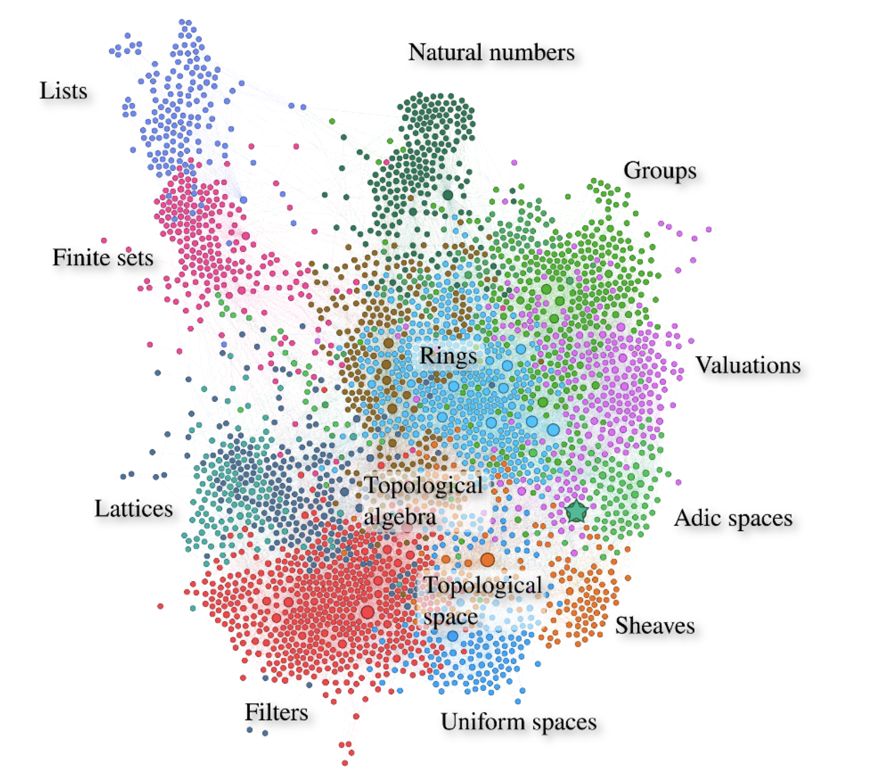
"I'm investing time now so that somebody in the future can have that amazing experience." — Heather Macbeth, Prof. of Mathematics, Imperial College
Lean: The First 10 Years
Lean 4: Implemented in Lean
Sebastian Ullrich and I started development from scratch in April 2018. At the time, Mathlib was just ~55K LoC.
Goal: Implement compiler, elaborator, parser, tactic framework, and build system in Lean.
-
October 2020: Lean 4 compiles Lean 4.
-
January 2021: First pre-release. Mathlib is ~450K LoC.
-
September 2023: Lean 4.0 official release with Mathlib fully ported (~1.1M LoC).
-
Lean 4 is very extensible.
Lean: The First 10 Years
The Liquid Tensor Experiment
November 2020: Peter Scholze posed a formalization challenge.
"I spent much of 2019 obsessed with the proof of this theorem, almost getting crazy over it. I still have some small lingering doubts." — Peter Scholze
Johan Commelin led a team that verified the proof, with only minor corrections.
They verified and simplified the proof without fully understanding it.
"The Lean Proof Assistant was really that: an assistant in navigating through the thick jungle that this proof is." — Peter Scholze
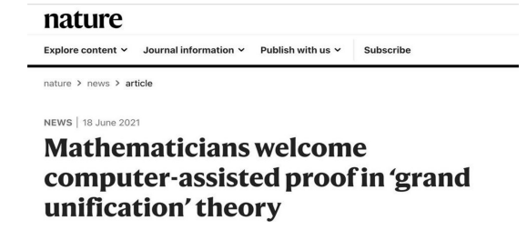
Lean: The First 10 Years
The Lean FRO
Nonprofit. 20 engineers. Open source. Controlled by no single company.
Sebastian Ullrich and I launched it in July 2023.
We run the Lean FRO as a startup.
36 releases and 9,500+ pull requests merged since launch.
Focus: trust, scalability, understanding.
Funders: Alex Gerko, Alfred P. Sloan Foundation, Amazon, Beneficial AI Foundation, Harmonic, Richard Merkin Foundation, Simons Foundation.
The Lean project was featured in NY Times, Quanta, Scientific American, Wired, and others.
What is Lean Today?
A programming language and a proof assistant.
def reverse : List α → List α
| [] => []
| x :: xs => reverse xs ++ [x]
theorem reverse_append (xs ys : List α)
: reverse (xs ++ ys) = reverse ys ++ reverse xs := by
induction xs with
| nil => simp [reverse]
| cons x xs ih => simp [reverse, ih]
#eval reverse [1, 2, 3]
Mathlib Growth and Build Cost
Instructions to build Mathlib, measured for every commit by radar, our performance-tracking server.
It is cheaper to build Mathlib now than when we launched the Lean FRO, and Mathlib is more than twice as big.
Green: Lean releases. The sharp drops correspond to compiler and automation improvements.
Mathematics Is Adopting Lean
Six Fields Medalists engaged: Tao, Scholze, Viazovska, Gowers, Hairer, Freedman.
-
Carleson's Theorem (completed) — van Doorn
-
Liquid Tensor Experiment (completed) — Commelin
-
The Polynomial Freiman-Ruzsa Conjecture (completed) — Tao
-
Equational Theories Project (completed) — Tao
-
Sphere Packing — Birkbeck, Hariharan, Lee, Ma, Mehta, Viazovska
-
Fermat's Last Theorem — Buzzard
-
Inter-Universal Teichmüller Theory — Mochizuki
Verso: Type-Checked Documents
-
Future math papers will embed type-checked Lean code.
-
Lecture notes, papers, and slides in one tool.
-
These slides are written in Verso.
-
Every example is checked by Lean.
-
lean-lang.org is written in Verso.
-
My homepage is written in Verso.
-
Verso is a domain-specific language embedded in Lean.
-
Built by David Thrane Christiansen at the Lean FRO.
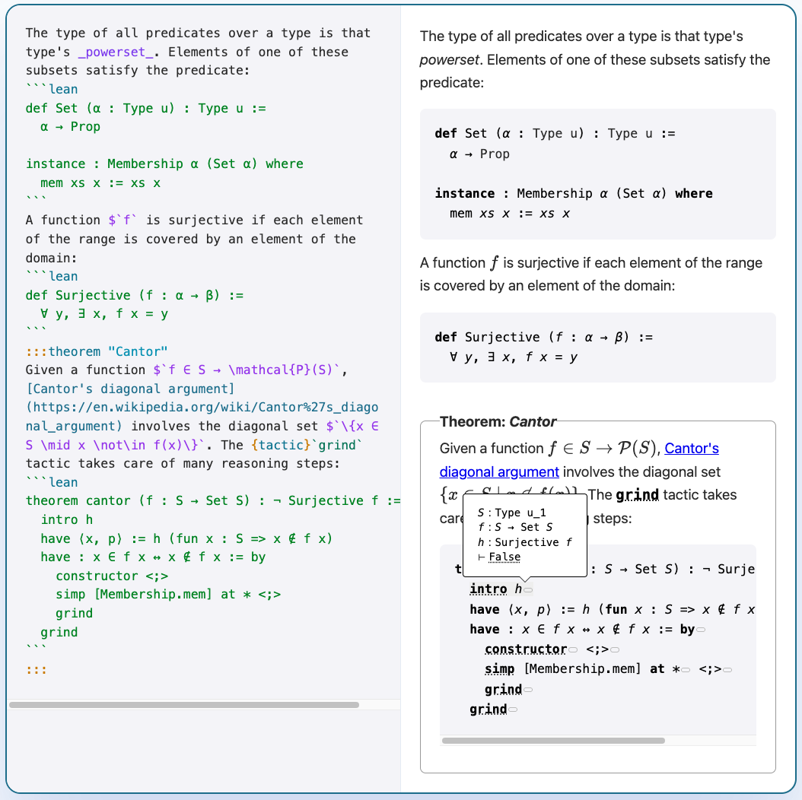
Verso Blueprint
-
Verso Blueprint is the next generation of Massot's Lean Blueprints, which are widely adopted in the Lean community.
-
For large projects like FLT and Sphere Packing: it tracks definitions, lemmas, and dependencies.
-
The blueprint is a Lean document with inline code that is type-checked.
-
Built by Emilio Jesús Gallego Arias at the Lean FRO.
-
Emilio ported major projects onto it: FLT, Carleson, Sphere Packing.

Lean Verbose
Lean Verbose provides natural-language tactics to teach mathematics using Lean 4.
Playing the Lean game using mouse clicks and natural language.
Lean Verbose is implemented in Lean by Patrick Massot.
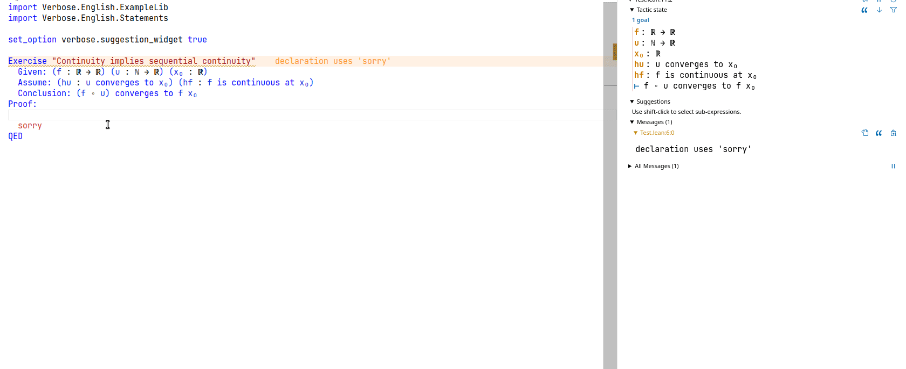
What We Learned from Mathematics
-
Machine-checkable proofs enable a new level of collaboration.
-
Formalization helps understanding complex objects and proofs, getting new insights, and navigating through structures beyond our cognitive abilities.
-
Formal math is more maintainable: auto-refactoring and generalization for free.
"We had formalized the proof with this constant 12, and then when this new paper came out, we said, 'Okay, let's update the 12 to 11.' And what you can do with Lean is that you just in your headline theorem change a 12 to 11. You run the compiler and... of the thousands of lines of code you have, 90% of them still work." — Terence Tao, Lex Fridman interview
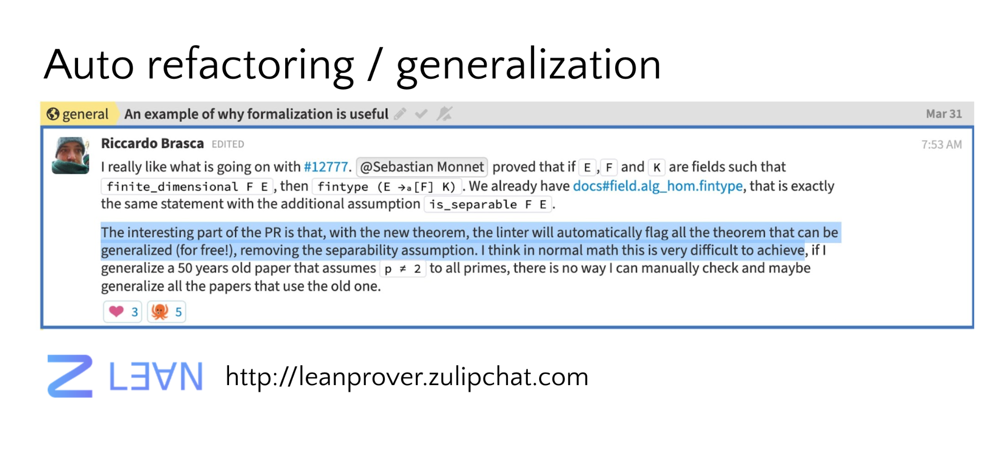
Papers with Lean by Month
AI Is Writing Lean
AlphaProof and the International Math Olympiad (2024)
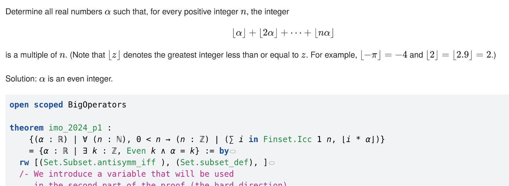
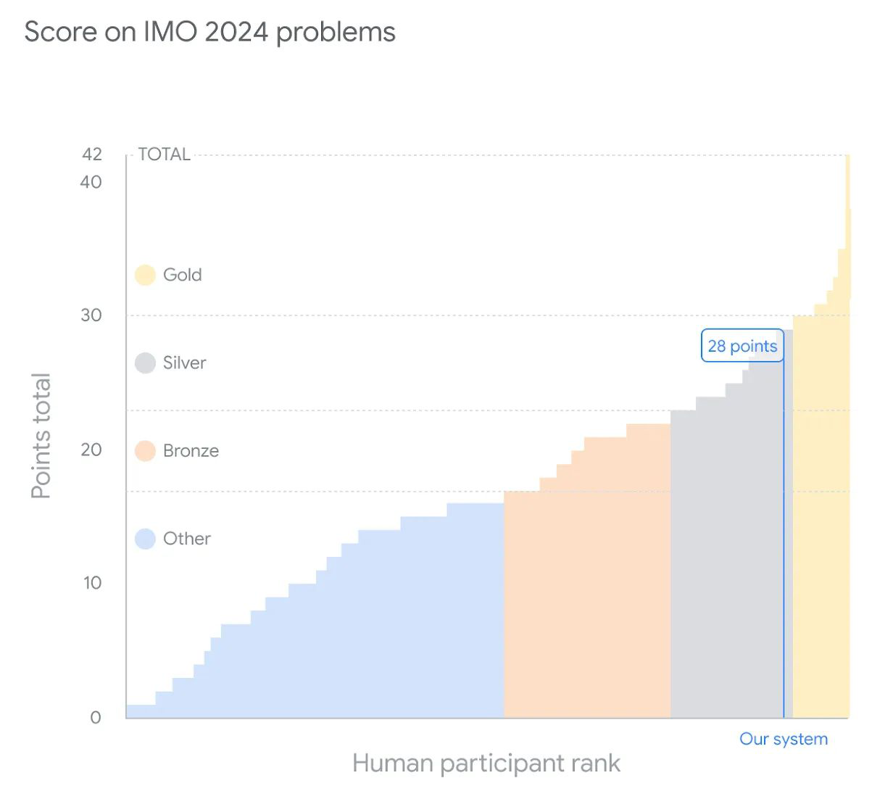
deepmind.google/discover/blog/ai-solves-imo-problems-at-silver-medal-level
IMO 2025: 3 Gold, 1 Silver
OpenAI (informal)
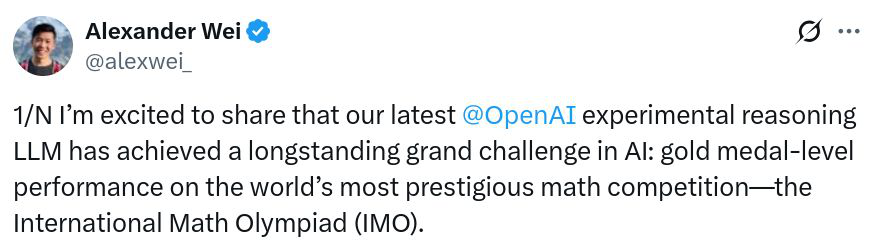
Harmonic (Lean)
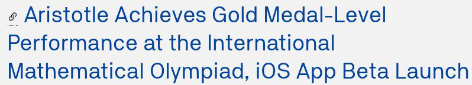
DeepMind (informal)
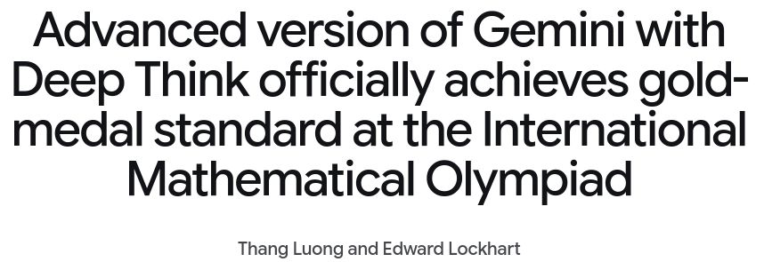
ByteDance (Lean)
Fermat's Last Theorem: 13M+ Lines of Lean

"We are sharing the first complete computer-checked proof of Fermat's Last Theorem. Claude worked largely autonomously over 11 days to write the proof in the Lean programming language." — Anthropic
Finite-Time Blowup: Euler, Boussinesq, Porous Media
Tristan Buckmaster (NYU Courant) and Levent Alpöge
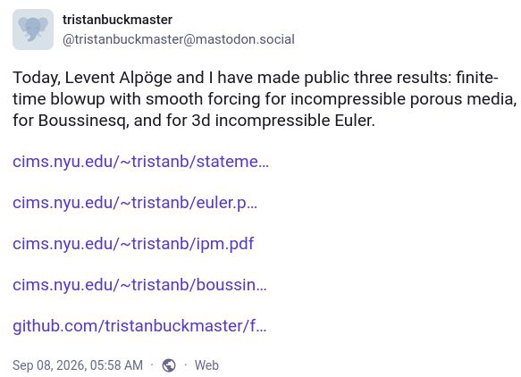
-
Three results, made public September 7, 2026.
-
Finite-time blowup with smooth forcing for incompressible porous media, for Boussinesq, and for 3D incompressible Euler.
-
The proofs are formalized in Lean.
-
1.81M lines of Lean.
OpenAI: Navier–Stokes in Lean
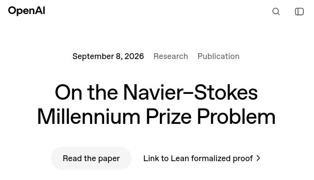
-
"On the Navier–Stokes Millennium Prize Problem", September 8, 2026.
-
A paper and a Lean formalized proof.
-
641K lines of Lean.
-
Checked by several independent Lean kernels.
OpenAI: The Exponential Time Hypothesis is False
Deterministic subexponential-time algorithm for k-SAT, every fixed k ≥ 2. Also counts satisfying assignments exactly, in polynomial space. AI output October 16; Lean formalization October 17.
abbrev Clause (V : Type u) := Finset (Literal V)
abbrev CNF (V : Type u) := Finset (Clause V)
def WidthAtMost (k : ℕ) (F : CNF V) : Prop := ∀ C ∈ F, C.card ≤ k
def count (F : CNF V) : ℕ := (satisfyingAssignments F).card
The theorem: one fixed machine computes count F for every F with WidthAtMost k F, within the stated time and space bounds.
Under examination by a group led by Russell Impagliazzo, Ramamohan Paturi, and Ryan Williams.
Classification of Finite Simple Groups
34 deviations from the published arguments, resolved during formalization.
The Stacks Project in Lean
-
The ~7,500-page open reference for algebraic geometry, started by Johan de Jong (Columbia) in 2005.
-
Dozens of statements needed refinement: missing hypotheses, edge cases in positive characteristic.
Tau Ceti
At the current rate, Kim expects 100M lines by 2027. Anthropic donated $3M of inference to Tau Ceti (AI for Science program).
Everybody can contribute. The two commands are on the Tau Ceti website.
All 100 Theorems in Lean
Freek Wiedijk's list of 100 significant theorems: Lean is the first system with proofs of all 100.
The 100th, October 30: Green's theorem, in Tau Ceti.
theorem green_ac_index_one {γ : ℝ → ℂ} {a b : ℝ} {U : Set ℂ}
{P Q : ℂ → ℝ} (hab : a < b)
(hγ : AbsolutelyContinuousOnInterval γ a b) (hclosed : γ a = γ b)
(hU : IsOpen U) (hregion : filledHull (γ '' uIcc a b) ⊆ U)
(hP : ContDiffOn ℝ 1 P U) (hQ : ContDiffOn ℝ 1 Q U)
(hindex : ∀ z ∈ filledHull (γ '' uIcc a b) \ (γ '' uIcc a b),
Contour.windingNumber γ a b z = 1) :
IntervalIntegrable (circulationFun P Q γ) volume a b ∧
IntegrableOn (curl P Q)
(filledHull (γ '' uIcc a b) \ (γ '' uIcc a b)) ∧
(∫ t in a..b, circulationFun P Q γ t) =
∫ z in filledHull (γ '' uIcc a b) \ (γ '' uIcc a b), curl P Q z :=
TauCeti.green_ac_index_one
Riemann Hypothesis up to Height 10⁸
Salvatore Mercuri and Bhavik Mehta
def RiemannHypothesisUpTo (T : ℝ) : Prop :=
∀ s, riemannZeta s = 0 → (¬∃ n : ℕ, s = -2 * (n + 1)) → s ≠ 1 →
|s.im| < T → s.re = 1/2
-
Proved for T = 100,000,300: the first 248,008,818 nontrivial zeros are on the critical line, and they are simple.
-
6,013,447 modules, 240M lines of Lean (66M without documentation and blank lines).
-
244,190 CPU core-hours on EPCC's Cirrus supercomputer. Height 10⁴ builds on a laptop in 1 min 29 s.
-
Most of these lines are not handwritten. They are automatically generated certificates for numerical computations.
-
The authors put significant engineering effort into managing the enormous proof:
-
Shared numerical expressions are proved once and reused through auxiliary lemmas.
-
Proofs are divided into batches, limiting memory usage.
-
Expensive numerical computations happen in metaprograms; the kernel verifies their resulting certificates.
-
Scale of Lean Formalizations
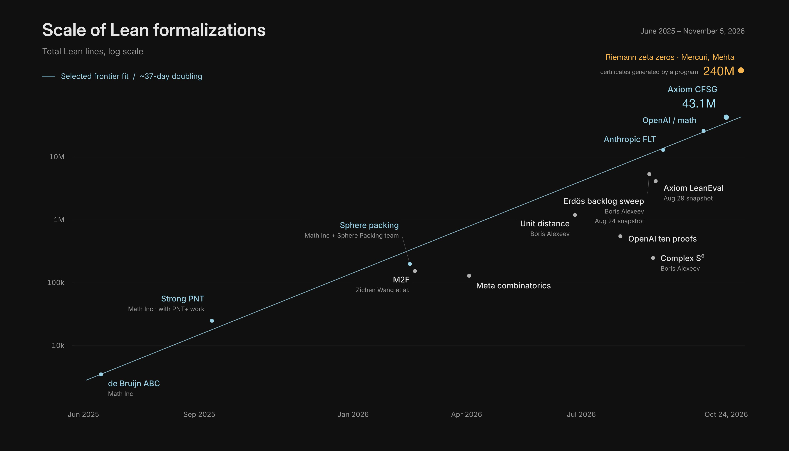
Lean in a Research Workflow
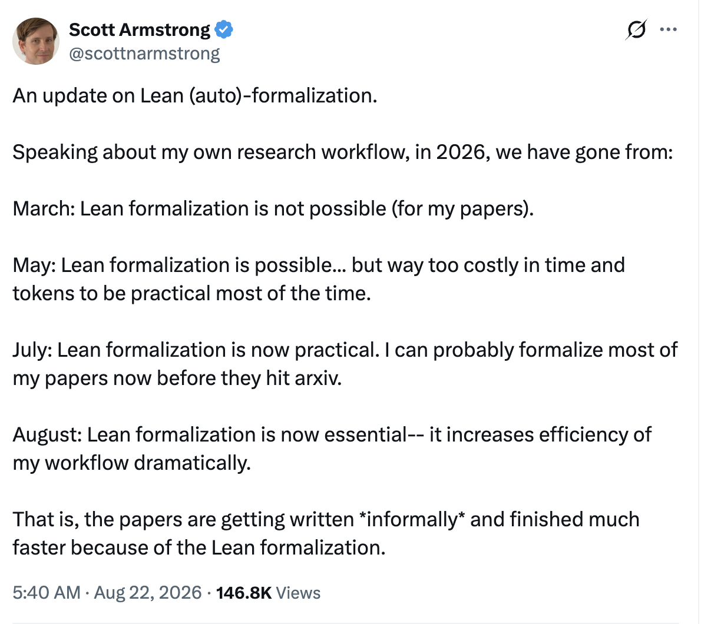
Software Verification
Lean is not only for mathematics.
Cedar (AWS): Verified Authorization
Cedar — open-source authorization policy language. Used by AWS Verified Permissions and AWS Verified Access.
Cedar spec: the model is written in Lean.
Three examples of verified components: evaluator, authorizer, validator.
-
forbid_trumps_permit— if any forbid policy is satisfied, the request is denied. -
allowed_only_if_explicitly_permitted— a request is allowed only if at least one permit policy is satisfied. -
typecheck_is_sound— if the validator accepts a policy, evaluation produces a boolean.

SymCrypt (Microsoft): Verified Cryptography
Son Ho (Microsoft Research) and the SymCrypt team

SymCrypt: Microsoft's core cryptographic library, rewritten in Rust.
Aeneas: translates safe Rust to pure functional Lean code.
The first release includes complete proofs for ML-KEM and SHA-3 code running in Windows Insider builds today.
"We are verifying code faster than we can write it." — Son Ho, SymCrypt, Microsoft
Kraken (Google): Verified Assembly
Jonathan Protzenko (Google, project lead), Andres Erbsen, Luke Zarko, and the Kraken team
FFmpeg's AAC SBR decoder: memory safety under its API protocol
10,000+ assembly instructions; ~240K lines of Lean.
Verifies x64 and aarch64 assembly, hand-written or compiler-generated. Semantics written by hand; proofs written by agents.
Built with vcgen (Sebastian Graf, Lean FRO).
SymM and grind hom are joint work between Google and the Lean FRO.
lean-zip: zlib in Lean
Kim Morrison (Lean FRO)
Coding agents (Claude and Codex) converted zlib to Lean, proved it correct, then optimized it under the proof.
theorem zlib_decompressSingle_compress (data : ByteArray)
(level : UInt8) (maxOutputSize : Nat)
(hsize : data.size ≤ maxOutputSize) :
ZlibDecode.decompressSingle
(ZlibEncode.compress data level) maxOutputSize = .ok data :=
LeanZip.zlib_decompressSingle_compress
-
Silesia corpus (212 MB), level 6: lean-zip 4.57 s, miniz_oxide (Rust) 5.77 s; 2× at level 9. 1,100+ theorems, ~32K lines of proof.
"This allows us to let AIs loose optimizing the code, requiring that they update the proof whenever the implementation materially changes." — Kim Morrison
lean-zip: Optimized Under the Proof
Neuron Compiler (AWS)
Sean McLaughlin and the Neuron team
The compiler stack for AWS Trainium, Amazon’s custom AI accelerator. 700,000 lines of Lean and growing.
An AI-generated C version had many bugs. The team instead used AI to write a fast Lean version and prove it equivalent to the simple model.
Aristotle for C and Verilog

October 27, 2026
Tensordyne: Verilog
-
12.2M gate equivalents, 312 pages of specifications.
-
241 whole-block properties: 185 proved, 56 refuted.
-
8 bugs found, including earlier sub-block runs, 25,000–110,000 cycles after reset.
LibTomMath: C
-
3 bugs found and repaired.
-
Two arithmetic routines optimized and proved against the same specification.
-
Modular exponentiation: 1.31–1.38× faster (1,024- to 4,096-bit).
&Atlas (&Truth): Verifying Open-Source C Code
-
An interactive map of open-source C code: 3,459 projects, 142M lines.
-
Green: verified. Orange: in progress. Gray: not verified yet.
-
November 13: 107,199 lines verified, 197,500 in progress.
-
Properties: memory safety and absence of undefined behavior.
-
1,269 bugs reported. Details are withheld for coordinated disclosure.
-
The proofs are in Lean. &Truth plans to release the specifications and proofs.
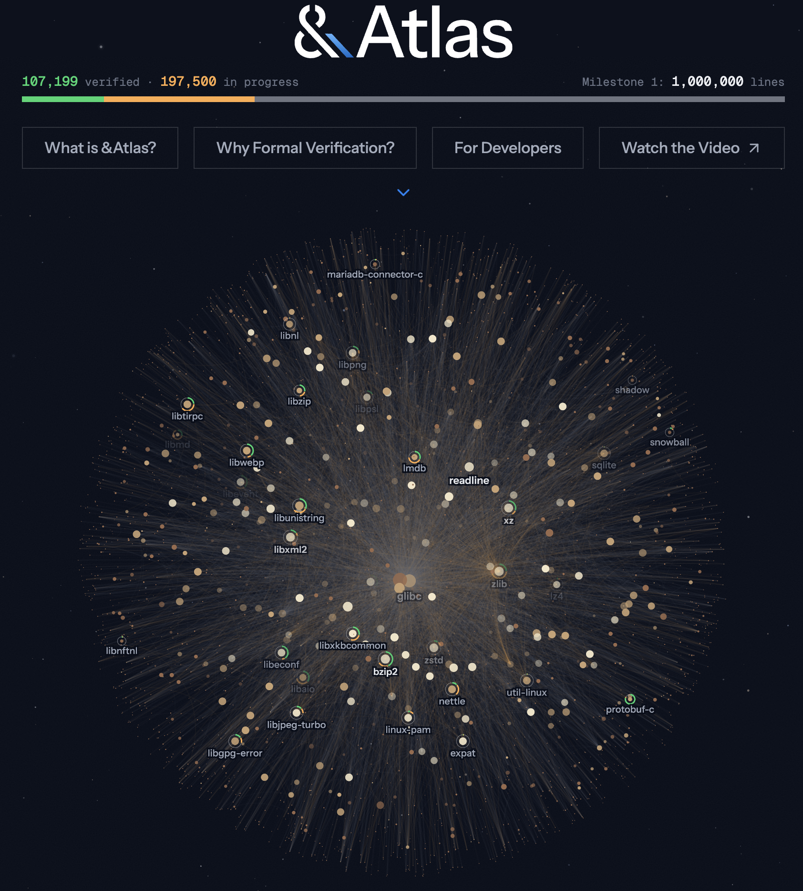
Signal Shot
Signal Shot: verify the Signal protocol and its Rust implementation using Lean. Launched in April 2026, led by the Beneficial AI Foundation and the Lean FRO.
Green: completed. Brown: in progress. B: Beneficial AI Foundation. G: Google DeepMind.
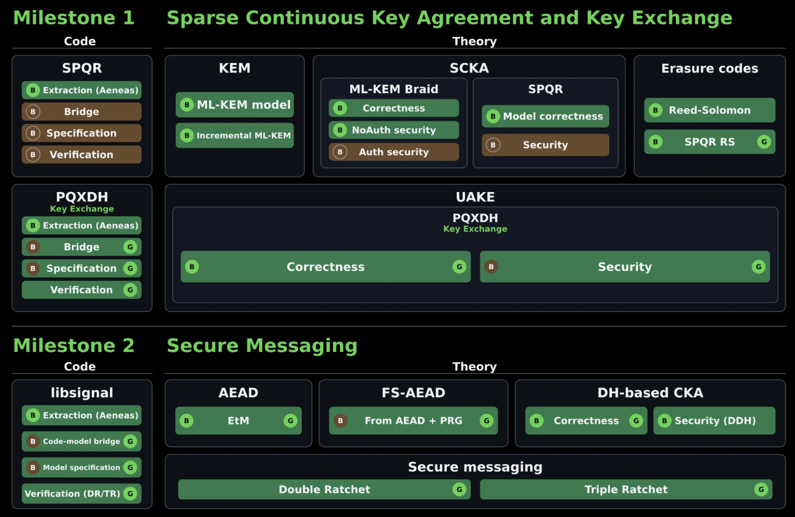
AlphaProof Code (Google DeepMind)
Swarat Chaudhuri, Pushmeet Kohli, and the AlphaProof Code team · November 10, 2026
-
AI agents proved key security properties of libsignal, for the compiled code.
-
Over 6 million lines of Lean, in four weeks.
-
People reviewed every specification. The agents flagged 1% of the development for human review.
-
Two previously fixed bugs were reintroduced: the system proved that each buggy version is insecure.
-
It assumes the Signal Shot results for the Dalek elliptic curve library and SPQR.
Still to do, from the Beneficial AI Foundation post:
-
Security of ML-KEM Braid, SPQR, and SCKA messaging; anonymous credentials; other architectures.
-
The AArch64 semantics is trusted: ~26K lines of Lean.
Startups Building on Lean
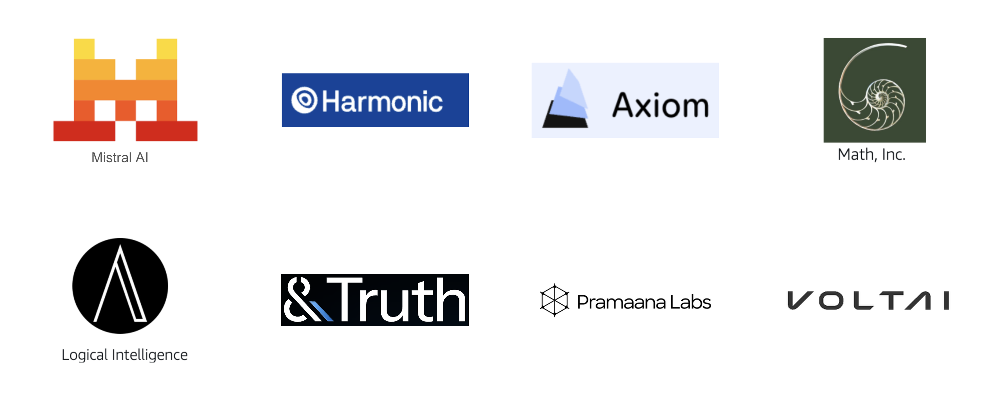
The Lean FRO
The Statement / Specification Is Our Responsibility
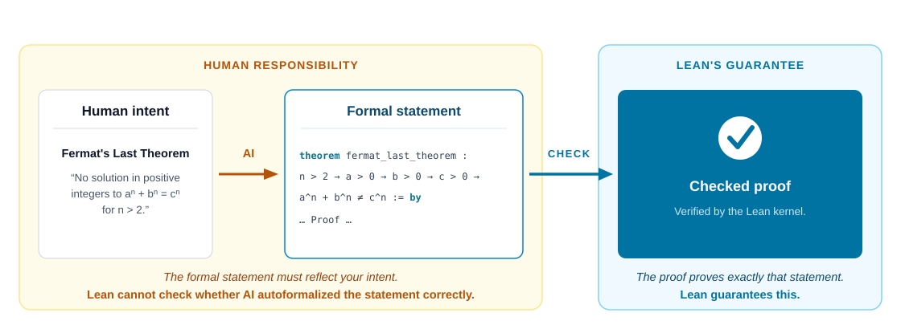
Formal Conjectures (Google DeepMind): curated, human-verified formal statements of open problems.
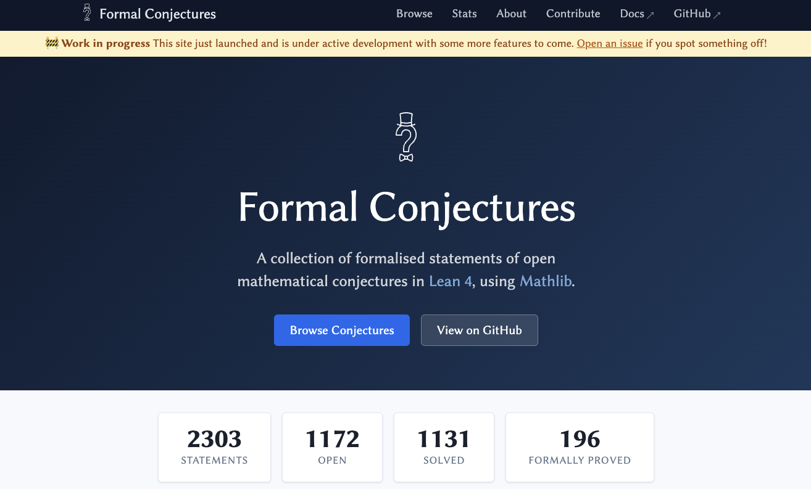
Validation Architecture
con-leche: A Verified Proof Checker
Joachim Breitner (Lean FRO). Code and proofs written by Claude. Released September 10, 2026.
A proof checker written in Lean. The main theorem: every set of declarations it accepts has a model in set theory. Checks all of Mathlib, FLT, Navier–Stokes, and openai/math. Full Mathlib, one worker:
Mathlib with 8 workers: ~100 s. FLT (1,044,222 declarations).
con-ron and con-agua
con-agua theorem: if checker.s accepts, con-leche and con-ron accept (up to resource limits).
Lean Kernel Arena
arena.lean-lang.org benchmarks independent proof checkers on the same proofs.
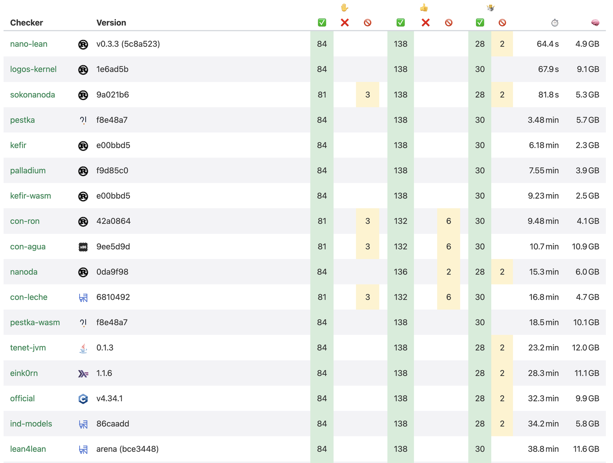
Scaling Lean
Lake
CFSG module graph, ~19.9K modules: 2,270 s → 1,387 s
Lake's own CPU time: −93%.
Mac Malone, after a proposal by Nickolai Zeldovich: the transitive import closure is computed from one build-store snapshot.
Mac Malone and Marcelo Lynch: cache overhaul with on-demand downloads, parallel transfers, deduplication by hash, content-stable archives.
lean-raw: Two paths to the kernel
Agents use the syntax we designed for people: extensible and flexible, but slow to process.
Fully explicit terms parsed directly into Expr, with no elaboration.
lean-raw: Initial benchmarks
Tau Ceti addition law: 74 s of elaboration → 20 ms
Statements and definitions only. G instructions:
File | Surface syntax | lean-raw |
|---|---|---|
Tau Ceti addition law | 620.51 | 1.26 |
CFSG worst file | 1,996.1 | 638.7 |
CFSG worst file, no code generation | 1,440.9 | 84.6 |
Lazy Import
in progress · Sebastian Ullrich
con-leche as the Official Kernel
Kernel Improvements
Certificate Language
A small imperative language, executed by the kernel. Its semantics is written in Lean.
Why it is important:
-
Math proofs that contain lots of computation.
-
Specialized procedures for linear arithmetic, commutative rings, SAT, etc. We prove their correctness and execute the code.
We want to provide:
-
A verified interpreter.
-
A verified compiler using the Kraken semantics. Initial experiments by Andres Erbsen (UW): 50% of the speed of state-of-the-art C compilers.
-
Transpilation to C, and multiple C compilers for trust.
A New Code Generator
Conclusion
Lean is a programming language and a proof assistant. A small kernel checks every proof. It does not matter whether a person or an AI wrote it.
Mathematics: formalizations that took teams years now take AI agents days or weeks. Formalization is becoming part of the research workflow.
Software and hardware: humans write the specification; AI agents write the code and the proofs. Verification is now cost-effective.
Lean has verified checkers: con-leche, con-ron, con-agua. Next: con-leche as the official kernel.
Lean FRO focus: Trust, Scalability, Understanding. Scalability is the new challenge: the largest projects now have tens of millions of lines of Lean, and one has 240M.
Lean FRO is looking for a Technical Communication & Content Lead.
Thank You
Leo de Moura
lean-lang.org | leanprover.zulipchat.com